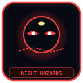

Lore & Cosmology — The 1,778 Cycles of Somnarak

The historical and metaphysical framework of Somnarak spans 1,778 temporal resets, the primordial Alpha Tree, the catastrophic Three Sorrows, and the eventual Dawn of Hope in Year 4,238.
“The city remembers in loops. The Tree does not. The Dawn is not a pardon; it is a date.”
— Absolvohan chronicle, Year 4,238
Lore & Cosmology is the historical and metaphysical spine of Somnarak: the 1,778 resets, the subterranean Alpha Tree, the Three Sorrows, the Seven Taboos, and the Dawn of Hope in Year 4,238. These pages are not flavor text for combat. They are the reasons the Hand of Change still runs.
Han is grief given fuel. The Tree drinks it. The facility contains what the city cannot house. Night Hazards and Ordeals sit outside cells. The Weeping River and the Doorspeech are civic facts, not metaphors. Open a chronicle, not a slogan.
THE CYCLE & ABSOLVOHAN
1,778 facility resets from Day 0 to Day 365 — not a metaphor. Absolvohan is the recorded end of that loop, not a slogan for hope.
READ 9-PART CHRONICLE →THE ALPHA TREE
Subterranean arboreal organism under Zone A. Its sap is Han: grief, regret, and civic injury made into fuel the city and the Hand both drink.
VIEW ARBOREAL DOSSIER →THE THREE SORROWS
Primordial cataclysms — Grief, Oblivion, and the Final Void — that still color every Sorrow Entity and every Han damage type.
VIEW METAPHYSICAL MATRIX →THE SEVEN ABSOLUTE TABOOS
City law, not facility policy. Breach is execution. The tablets are seven, not ten. Judexhan enforces; the Directorate contains the fallout.
EXAMINE LAW CODES →THE CHEONGULA INCIDENT
Disaster log of the Cheongula collapse — a civic wound that still feeds entities, Night Hazards, and the Maw's hunger for unfinished names.
VIEW DISASTER LOGS →THE DAWN OF HOPE
Year 4,238. The current era of the public wiki, not a guaranteed salvation. Dawn Initiative filing begins here.
READ LIBERATION TEXT →THE DOORSPEECH
Speech that opens what should stay shut. Long article on purpose: it is a civic mechanism, not a riddle box.
READ LINGUISTIC STUDY →THE DREAM REALM
The other side of waking Somnarak — where Han condenses without a cell. Agents do not 'visit' it; they survive returning.
VIEW REALM TOPOLOGY →DAILY LIFE IN SOMNARAK
Rationed Veil light, Taboo sirens, and the ordinary work of people who live next to containment without holding a badge.
VIEW CIVILIAN DOSSIER →EFFLORESCENCE & FRACTURE
When Han blooms through a body or a street. Fracture is the agent cost; Efflorescence is what the city sees.
EXAMINE PSYCH-METRICS →NAMED FRACTURES
Documented breaks in people and places that still have names attached. Naming is protection and a targeting vector.
VIEW FRACTURE LOGS →
NIGHT HAZARDS & VIGIL
Uncontained cousins of Sorrow Entities. They cannot be housed. Vigil is the civic answer when the Hand cannot arrive.
EXAMINE VIGIL RULES →SOMNARAK COSMOLOGY
How the Tree, the Sorrows, the Veil, and the reset count sit in one structure. Read this before arguing origin myths.
VIEW COSMOLOGY →SOMNARAK NAME REGISTRY
Why names move on Lament crystal and why Floor 2 logs every revealed one. Forgetting is not mercy here.
VIEW NAME ROSTER →THE THREE AGES & HISTORY
Age-work of the city before, during, and after the loops. History is not a timeline widget; it is who still owes whom.
READ COMPLETE TIMELINE →THE WEEPING RIVER
Long article on purpose. A civic watercourse of grief, not a pretty map ribbon.
VIEW WATERWAY ATLAS →THE BOOK OF REGRESSOR
Regressor chronicle — the loops as lived, not as a reset counter. Two entries on this hub point at the same book from different desks.
OPEN LOG →In the cosmology of Somnarak, Han (한) is not mere emotion, but a fundamental metaphysical law of conservation. Whenever human grief, righteous indignation, unavenged death, or profound sacrifice is denied resolution or forced into silence, the psychic resonance accumulates as physical pressure within the bedrock of the world.
Drawing this subterranean effluent upward, the Alpha Tree converts raw Han into the radiant energy that illuminates and powers the metropolitan sectors. However, when unrefined Han reaches critical saturation thresholds, it manifests spontaneously as monstrous, sentient entities known as Sorrow Entities.
| Historical Era | Cycle Range | Key Historical Epochs | Technological & Societal Breakthroughs | Major Cataclysms |
|---|---|---|---|---|
| The First Age (Founding) | Cycles 001 – 210 | Discovery of the Alpha Tree seedling and the subterranean Weeping by Director Majin. | Construction of Facility 01; voluntary synthesis of the First Generation Echo-Core Leads. | The First Great Collapse; emergence of SE-001 (The Weeping Colossus). |
| The Second Age (Containment) | Cycles 211 – 1,140 | Establishment of the 4 Work Types (Observation, Extraction, Insight, Restraint). | Invention of M.A.W. equipment materialization by Lead Ayshuk; expansion of Zones B and C. | The Cheongula Deep Vault Breach; sealing of Floor 8 by Lead Xyan. |
| The Third Age (Silence & Resets) | Cycles 1,141 – 1,777 | Implementation of the Cycle Reset Protocol by Secretary Seiyon and Director Majin. | Memory wiping technologies, creation of the Amnestic Corps, synthesis of APOCRYPHA-grade gear. | 1,777 complete facility resets to prevent global Efflorescence and total urban crystallization. |
| The Present Cycle (Cycle 1,778) | Cycle 1,778 (Active) | The Dawn Initiative; ongoing operations under Code Amber alert status. | Deployment of tactical radar networks, stabilization of all 8 facility sectors. | Current status: 137 verified canonical records actively maintained. |
| Taboo Number | Prohibition Mandate | Metaphysical Rationale | Enforcement Division | Penalty for Infraction |
|---|---|---|---|---|
| Taboo I | Denial of the Name (이름의 부정) | Erasing or refusing to speak the true name of a fallen operative causes immediate Han crystallization. | Grand Archivist Marjuk | Permanent extraction to Floor 6 Memorial Stele. |
| Taboo II | Unfiltered Doorspeech (비정제 문언) | Speaking directly to high-threat entities without acoustic frequency baffles induces irreversible cognitive rupture. | Lead Dekan (Maw's Keep) | Mandatory vocal chord neural dampening. |
| Taboo III | Unauthorized Effluent Consumption | Drinking raw liquid from the Weeping causes violent physical mutation into a Night Aberration. | Border Watch Mellda | Immediate kinetic liquidation by SED Strike Units. |
| Taboo IV | Artificial Memory Duplication | Cloning conscious memories across resets corrupts the Alpha Tree root resonance frequency. | Secretary Seiyon | Complete core memory scrubbing via Amnestic Slate. |
| Taboo V | Unsealed Cheongula Descent | Breaching Floor 8's subterranean iron gates risks unsealing the primordial Void chasm. | Gate Sentinel Xyan | Terminal exile into The Desolate wasteland. |
| Taboo VI | Desecration of M.A.W. Relics | Selling or altering extracted weapons without Directorate appraisal causes catastrophic M.A.W. corrosion. | UCD Commander Taeho | Asset confiscation and labor reassignment. |
| Taboo VII | Rejection of the Cycle Reset | Attempting to sabotage the facility reset protocol dooms the city to total Efflorescence petrification. | Director Majin | Permanent cranial core extraction and isolation. |